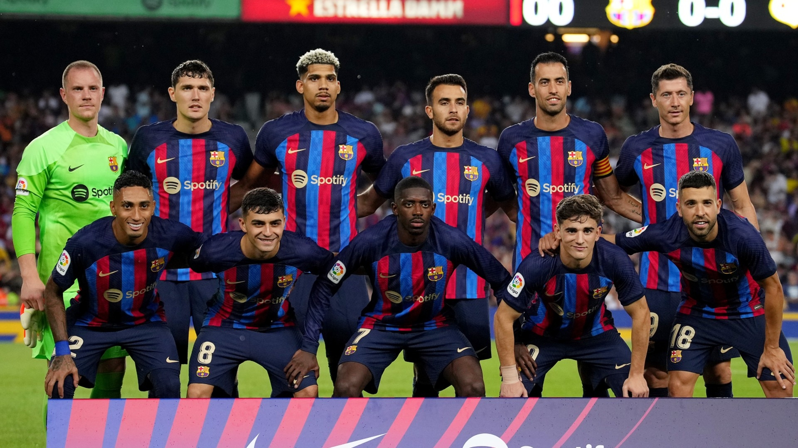
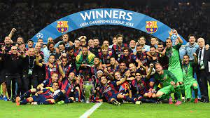

Xavi no escondió tras la derrota en el Bernabéu que el Barcelona está atravesando una mala dinámica. La que tenía que ser la semana clave para mostrar que el equipo estaba capacitado para competir entre los grandes, con el partido de Champions y el Clásico, terminó siendo una pesadilla para los culés.
Además, algunos jugadores han salido señalados en los dos encuentros, contra el Inter y el Real Madrid. Ahora mismo, solo Ter Stegen, Lewandowski y Pedri parecen intocables. El técnico deberá buscar soluciones inmediatas, el jueves se miden en casa al Villarreal, para revertir la situación. Todas las líneas, a excepción de la portería, exigen cambios.
El FC Barcelona ya no depende de si mismo para clasificarse a los octavos de final. De hecho, necesita un milagro. El Inter consiguió un empate prácticamente definitivo en el Camp Nou (3-3) y por los pelos el Barça no está ya en la Europa League.
Si el conjunto italiano gana contra el Viktoria Plzen, los azulgranas quedarían desterrados a la competición de plata antes de jugar contra el Bayern. El partido de este miércoles ante los italianos se presentaba clave para el desenlace final del Barça en la Champions y, si bien la afición respondió en el Camp Nou, no lo hizo el equipo sobre el verde.

